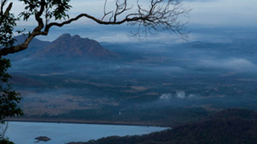
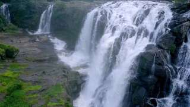
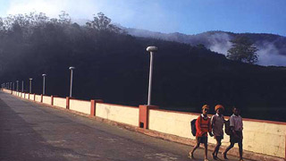
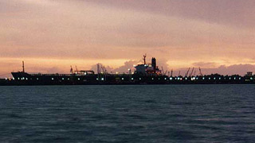
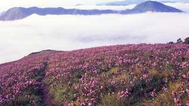

NELLIYAMPATHY HILLS

From the town of Nenmara in Palakkad district, the cloud-caressed peaks of the majestic Nelliyampathy Hill ranges are a sight to behold. The height of the hills ranges from 467 m to 1,572 m a nd it has an extremely calming effect on all who view it. To reach Nelliyampathy, one has to take the road starting from Nenmara that proceeds to the Pothundy Dam. There are about 10 hairpin bends that have to be negotiated on the way to Nelliyampathy.
ENTICING THOOVANAM

Amidst the dark dense forests of the Chinnar Wildlife Sanctuary is situated a pristine waterfall that makes the place dreamy with its ardent showers. The waterfall is located at a distance of 8 kilometres from the Marayoor-Udumalpet State highway. Here, the water falls from a height of 84 feet making a treat for the eyes. On your way to watch this beauty, if you are lucky enough you can sight elephants, bison, leopard, langurs, wolves, deer, rare butterflies and birds.
MATTUPETTY DAM

Mattupetty is among the most visited destinations in the tourist hotbed of Munnar. It is a beautiful picnic spot that regularly attracts visitors. People love visiting the dam and lake here and families can regularly be seen enjoying a fine afternoon in the area. The view of the valley from here is breath-taking and one gets to simply relax and enjoy the beautiful weather.
WILLINGDON ISLAND

Willingdon Island is among the most beautiful locations in the Kochi area. This man-made island, named after a former Viceroy, is among the biggest of its kind in India. It is a major commercial centre and has some of the best hotels in the city. It is also home to the Kochi Naval Base of the Indian Navy, the Central Institute of Fisheries Technology and the Port of Kochi. It handles millions of tonnes of freight every year. The island is connected to the mainland by the Venduruthy Bridge.
ALAPPUZHA
Referred to as the Venice of the East, Alappuzha has always enjoyed an important place in the maritime history of Kerala. Today, it is famous for its boat races, backwater holidays, beaches, marine products and coir industry. Alappuzha Beach is a popular picnic spot. The pier, which extends out to the sea here, is over 137 years old. Entertainment facilities at the Vijaya Beach Park add to the attraction of the beach. There is also an old lighthouse nearby which greatly intrigues all visitors.
NEELAKURINJI

Idduki’s Shalom Hills have been witnessing the bloom of blue Neelakurinji flowers recently. As per the officials, more than 10 ac of land have been blanketed with these rare blooms in Shalomkunnu this time. However, the hills are not open this time for tourists due to COVID-19. Strobilanthes Kunthiana, also known as Neelakurinji and Kurinji in Malayalam and Tamil, is a shrub that is found in the Shola forests of the Western Ghats in Tamil Nadu and Kerala. The Nilgiris Hills, which translates to Blue Mountains, got its name from these Neelakurinji flowers.
SANTA CRUZ BASCILICA

One of the most famous churches in Kerala and one among the 8 Basilicas, Santa Cruz Basilica is a beautiful church located in Fort Kochi. Known for spectacular Indo-European and Gothic architecture, historical paintings, murals and frescos, this church is more than 500 years old and was built during the arrival of Portugese in 1500 CE. The church had been revamped several times and the present structure was sanctified in 1905. If you want to visit the ancient churches in Kerala, then this should be in your itinerary.
St. FRANCIS CHURCH

St. Francis Church, is one of the top most tourist attractions of Kochi, dating back to 1503. Vasco da Gama was buried here in 1524 and 14 years later, his holy remains were relocated to Lisbon, Portugal. The timber-framed roof covered with tiles, white façade, frescos and stained glasses throw a dash of amusement on each visitor, making it one of the most significant churches in Kochi. In the middle of the lawn, there stands a cenotaph, built in the loving memories of Kerala people who laid down their lives in First World War.
NADAMEL MARTH MARIAM CHURCH

Nadamel Marth Mariam Church is a notable tourist attraction near Kochi. Located at the outskirt area, the Nadamel church was patronised by Cochin Royal Family and is one of the significant names in the list of Jacobite churches in Kerala. One of the most common traditions was whenever a new successor in the Royal family of Kochi, he would make an offering known as sharkara thattu veypu at the church and meet all the bishops and leaders in person.